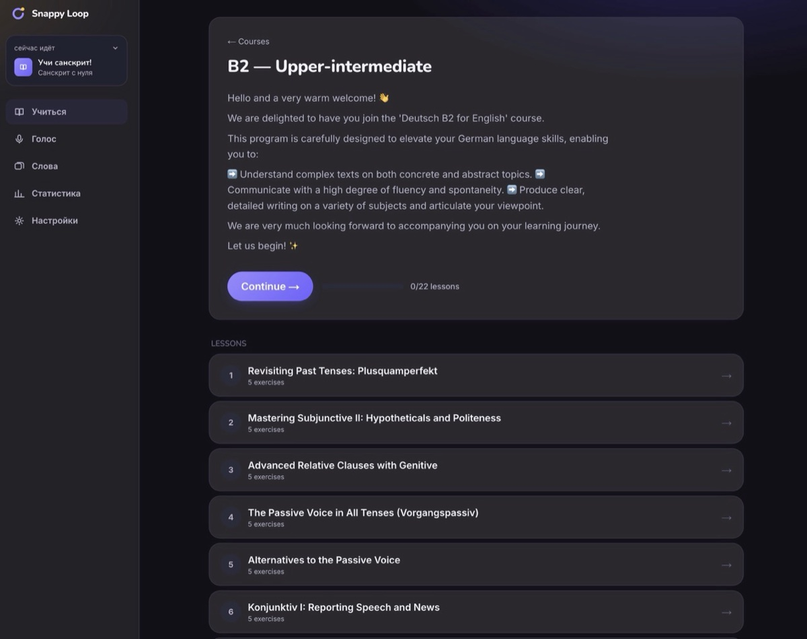
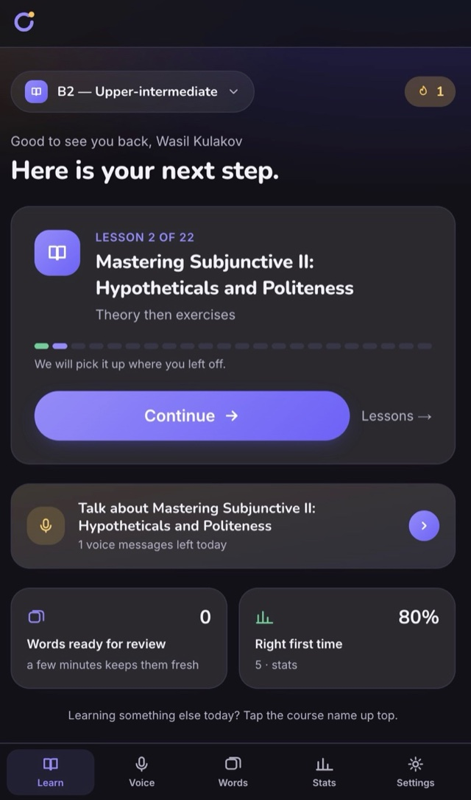
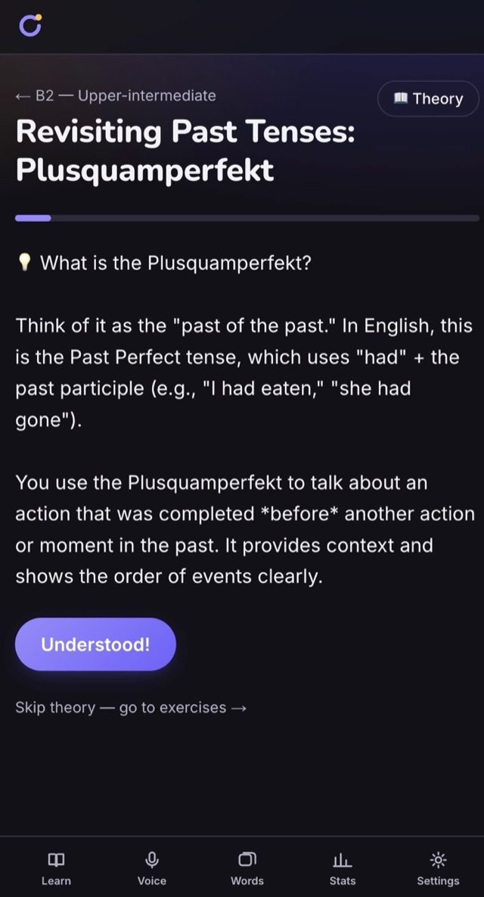
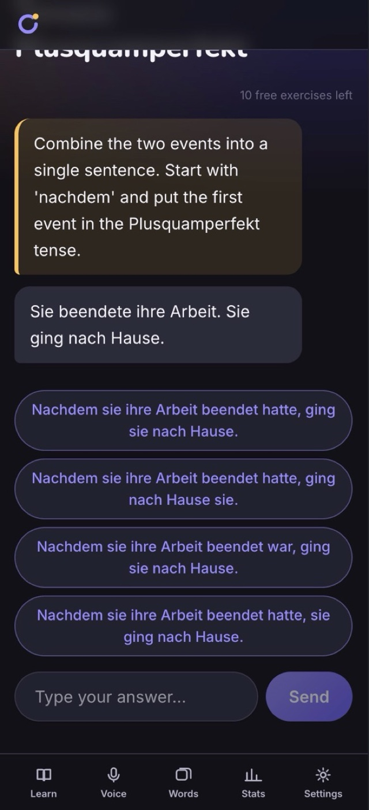

Von 200 auf 5.000 Lernende in drei Monaten
snappyloop ist ein KI-Sprachlernprodukt — Kurse, Sprechpraxis mit einem Tutor in Echtzeit und Vokabeln nach dem Spaced-Repetition-Prinzip, ausgeliefert über Telegram und seine Mini App.
Ich habe die Plattform gebaut: Infrastruktur und Sicherheit für das Multi-Agenten-System dahinter, lasttestet mit 20.000 Anfragen pro Sekunde. Als das Produkt in drei Monaten von 200 auf 5.000 Nutzer wuchs, wanderte die Architektur von einem einzelnen Long-Polling-Worker zu webhook-getriebenen, horizontal skalierten Bot-Workern — mit Redis für gemeinsamen Session-State und globale Rate Limits und einem zentralen Controller, der für die KI-Anbieter eine Obergrenze über alle Replicas hält.
Die Sicherheit auf dem Webhook-Pfad ist vierschichtig — Firewall, Ingress, IP-Allowlist und Prüfung der Request-Signatur —, die interne API ist nur über einen ausgehenden Cloudflare Tunnel erreichbar. SLO-Burn-Rate-Alarme auf Webhook-Bestätigungslatenz und Antwort-Erfolgsrate sowie Playwright-Proben aus mehreren Städten überwachen den Betrieb.



